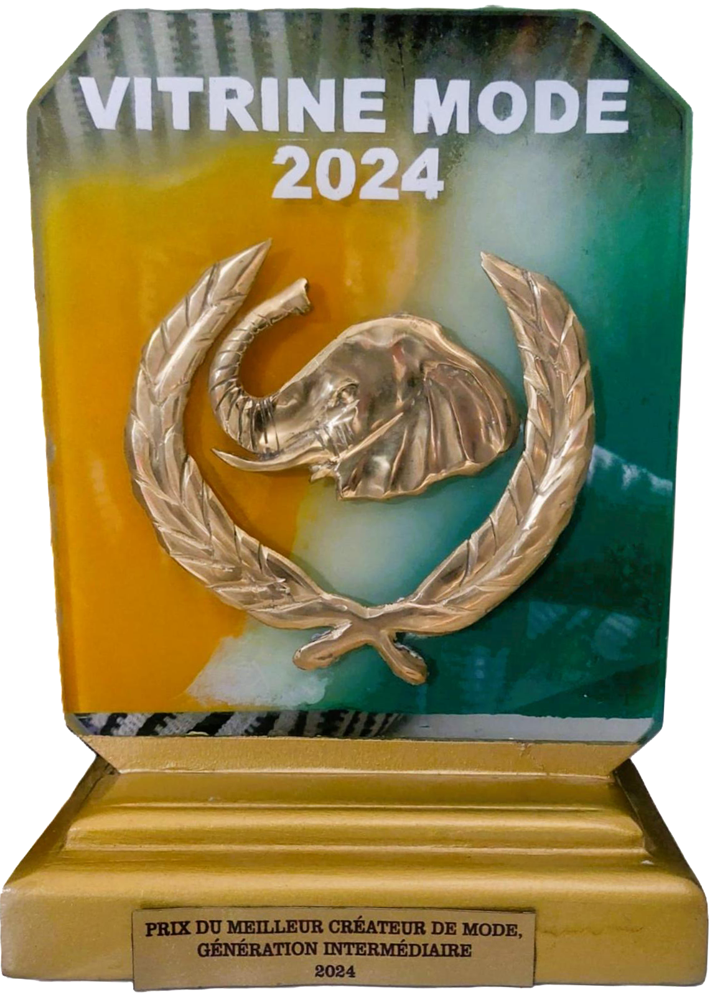
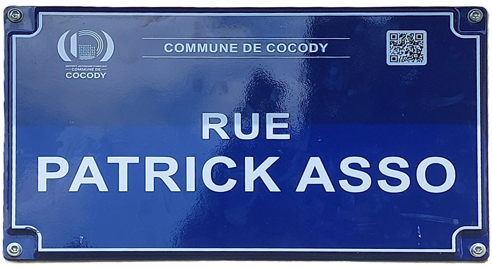

L'Âme du
Monolithe
Architecte de la silhouette et gardien des traditions, Patrick ASSO insuffle depuis plus de deux décennies une vie nouvelle aux textiles africains.
Le Monolithe Souverain
Patrick ASSO redéfinit les codes de l'élégance africaine. Son approche, baptisée "Le Monolithe Souverain", mêle avec audace la rigueur intransigeante de la coupe occidentale à la majesté absolue des étoffes Africaines.
Chaque création est une armure d'élégance, sculptée pour transcender le temps et honorer l'héritage d'un continent riche en histoires textiles.
« Derrière une belle tenue se cache un créateur. »
— Pat
RAYONNEMENT INTERNATIONAL
Les Podiums du Monde
Il a participé à de multiples défilés de mode à travers la planète, exportant la vision du Monolithe par-delà les océans.
Palmarès & Distinctions
Il a reçu plusieurs distinctions témoignant de la qualité de son travail. La consécration d'une vie dédiée à l'excellence de la mode.


"La mode n'est pas un vêtement, c'est une armure de lumière pour l'âme contemporaine."